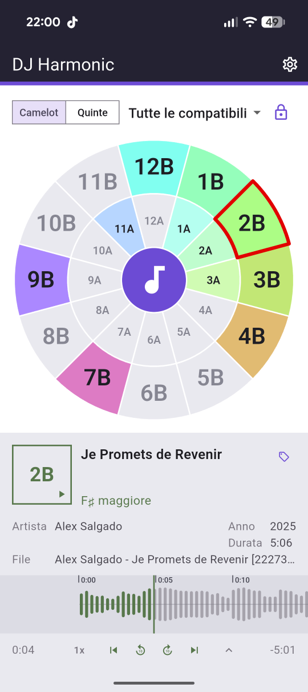
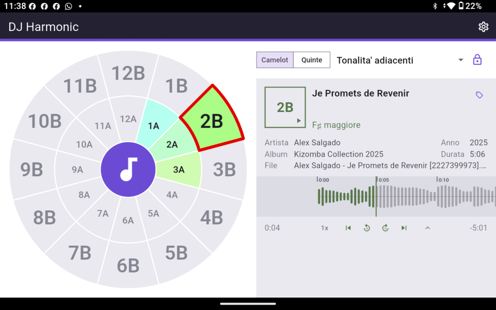
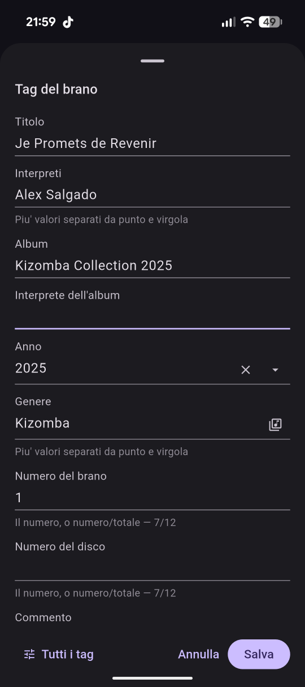
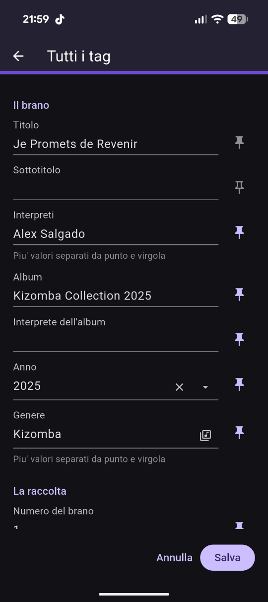

DJ Harmonic lee la tonalidad de una pista y enciende las que van a encajar con ella, en una rueda de Camelot que se lee de un vistazo. Todo ocurre en el teléfono: sin cuenta, sin nada que subir, sin registro.

La tonalidad la encuentra harmonium, un motor de detección escrito desde cero para DJ Harmonic. Funciona en el teléfono, sobre la pista entera, y responde en pocos segundos.
Cada paso ocurre en el dispositivo, sin servidor y sin conexión. La pista nunca sale del teléfono, ni siquiera para analizarla.
Construido y comprobado con casi 3.900 pistas de 50 géneros, del EDM a la ópera, antes de llegar a tu teléfono.
Intro, breaks y final incluidos, no un trozo tomado del medio. Una tonalidad que solo aparece a mitad de pista se oye igual.
Antes de buscar la tonalidad, harmonium mide cómo está afinada la pista: una grabación un poco alta o baja no acaba en la tonalidad de al lado.
La batería tiene energía en todas partes y ninguna altura. harmonium la aparta y escucha la armonía, con un poco más de peso en el bajo, donde se apoya la tonalidad.
Cada tonalidad recuerda la versión que la encontró. Cuando el motor mejora, solo se reanalizan las pistas cuya respuesta puede cambiar. Las tonalidades escritas por otras apps se quedan como están.
Nada que configurar antes de empezar: el botón en medio de la rueda ya es el selector de archivos.
Toca el botón del centro de la rueda y elige un archivo del dispositivo — mp3, m4a, wav o flac. La pista se lee entera, en pocos segundos, mientras un anillo cuenta el trabajo y la rueda espera.
La rueda se vuelve a encender en el sector en el que cayó, rodeado de rojo. El panel de abajo lleva el código Camelot y el nombre del acorde, y la tonalidad se escribe en las etiquetas del archivo: vuelves a abrir la pista, aquí o en otro programa, y ya está ahí.
Eliges una de las seis reglas y la rueda mantiene encendidas solo las tonalidades que esa regla permite, apagando todas las demás. Con el candado cerrado, una tonalidad que no encaja ni siquiera se puede elegir.

Ninguna biblioteca que importar, ninguna nube que sincronizar, ninguna cuenta que crear. Se abre en la rueda y ahí se queda.
Las menores en el anillo interior, las mayores en el exterior, y un color fijo por tonalidad. A la semana dejas de leer los códigos y vas por el color.
Lee la rueda como 12A y 1B, o como do♯m y sol tal como están en el círculo de quintas. Un selector arriba, y la aplicación vuelve a abrirse como la dejaste.
Desde todas las compatibles hasta un solo movimiento. La regla elegida sobrevive al cierre, porque es tu manera de trabajar y no un ajuste tocado por casualidad.
Cerrado, la rueda solo deja pasar a una tonalidad que encaja. Abierto, vas donde quieras. Es la diferencia entre ensayar e improvisar.
Cada análisis escucha la pista entera, con harmonium, el motor de tonalidad escrito desde cero para esta app. Cada tonalidad recuerda qué versión la encontró: una pista solo se reanaliza cuando la respuesta puede cambiar.
Título, artistas, álbum, género, año y decenas más salen del archivo, y vuelven a él cuando las corriges, en mp3 y wav. Elige cuáles muestra la ficha de la pista; si faltan, el nombre del archivo ocupa su lugar.
El recuadro de la tonalidad es el botón de reproducción. La pista arranca y se detiene ahí, sin una segunda pantalla y sin salir de la rueda.
La forma de onda de la pista se desplaza mientras suena, y la parte ya sonada toma el color. La arrastras para moverte, o saltas de diez en diez segundos, al principio o al final.
Español, inglés, italiano, francés y alemán, claro y oscuro. Ambos siguen al teléfono hasta que decidas otra cosa.
Una regla es un conjunto de movimientos sobre la rueda. Eliges una y la rueda se convierte en la respuesta a una sola pregunta: desde aquí, ¿a dónde puedo ir?
El conjunto completo. Todo lo que encajará junto a la tonalidad en la que estás, sin ordenarlo.
El mismo conjunto menos el salto entre los dos anillos. Lo que queda es el terreno que nadie discute.
Solo las vecinas: un paso a lo largo de la rueda, o derecho al otro anillo. El movimiento que se hace con los ojos cerrados.
Dos pasos arriba o dos abajo: los movimientos que levantan una pista, y los que la devuelven al suelo.
Un movimiento y solo uno, a siete sectores de distancia — un semitono hacia arriba. El impulso más antiguo que existe.
Tres sectores atrás con cambio de anillo. Más lejos de casa de lo que parece, y todavía consonante.


El número es la posición en el círculo de quintas, del 1 al 12; la letra es el anillo — A para las menores, B para las mayores. Dos pistas se mezclan cuando sus códigos son iguales, o distan uno, o comparten el número e intercambian la letra. La notación entera está ahí, y las cuentas las hace la rueda.
La disposición sigue a la pantalla en lugar de estirarse para caber. En el teléfono la rueda ocupa arriba y la pista se pone debajo. Giras el teléfono, o abres la aplicación en una tableta, y las dos se colocan una al lado de la otra.

Tableta — la rueda a la izquierda, la pista a la derecha

Teléfono — primero la rueda, debajo la pista

El tema claro, con sitio para respirar

Los ajustes, donde quiera que los abras
Capturas reales, nada preparado. Arrastra hacia el lado.




El análisis ocurre en el teléfono. El archivo que eliges se lee donde está, y ni él ni el resultado salen nunca del dispositivo — no hay ningún servidor nuestro en medio, y esa es también la razón de que no haga falta ninguna cuenta. Se leen cuatro formatos: mp3, m4a, wav y flac. Todo lo demás se rechaza en vez de adivinarse.
Abre la rueda, dale una pista, y mira junto a qué quiere ponerse.
Disponible enGoogle Play